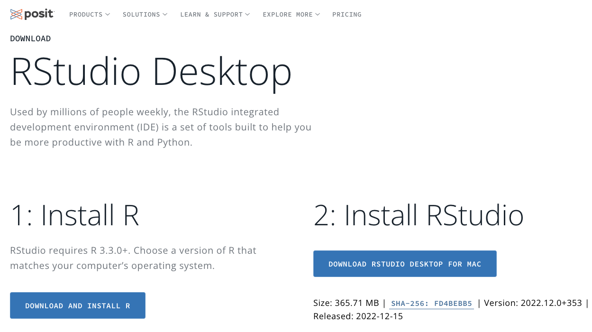
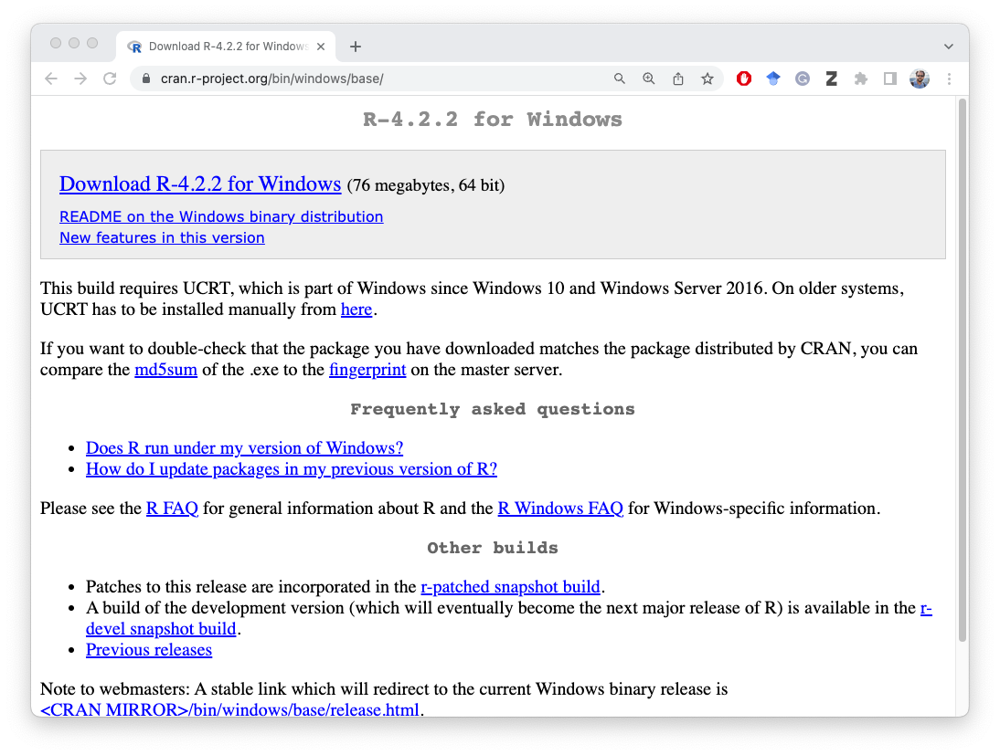
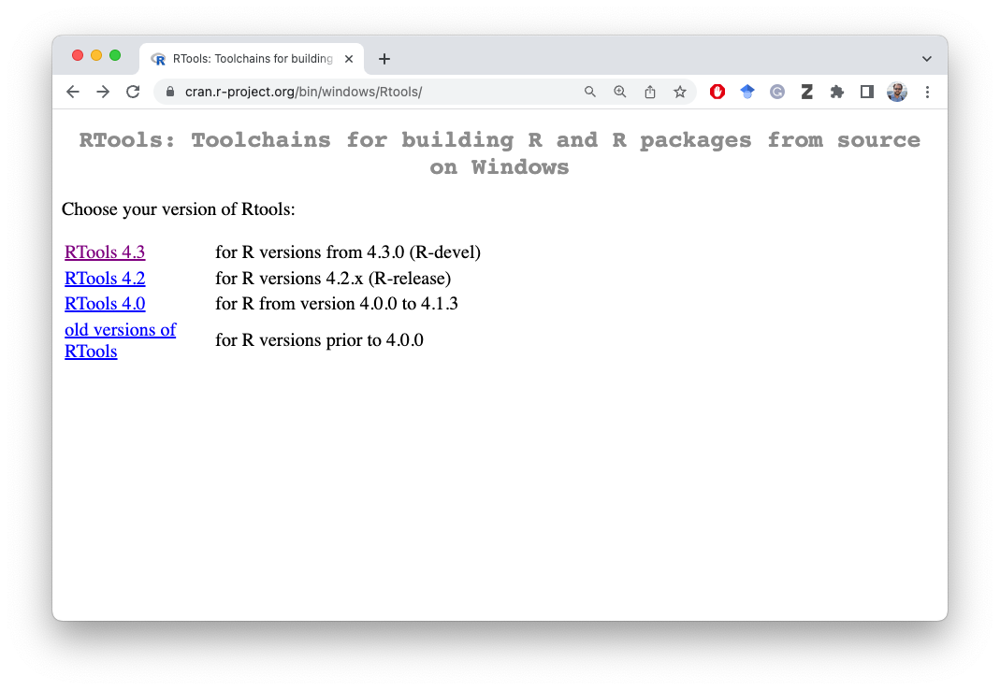
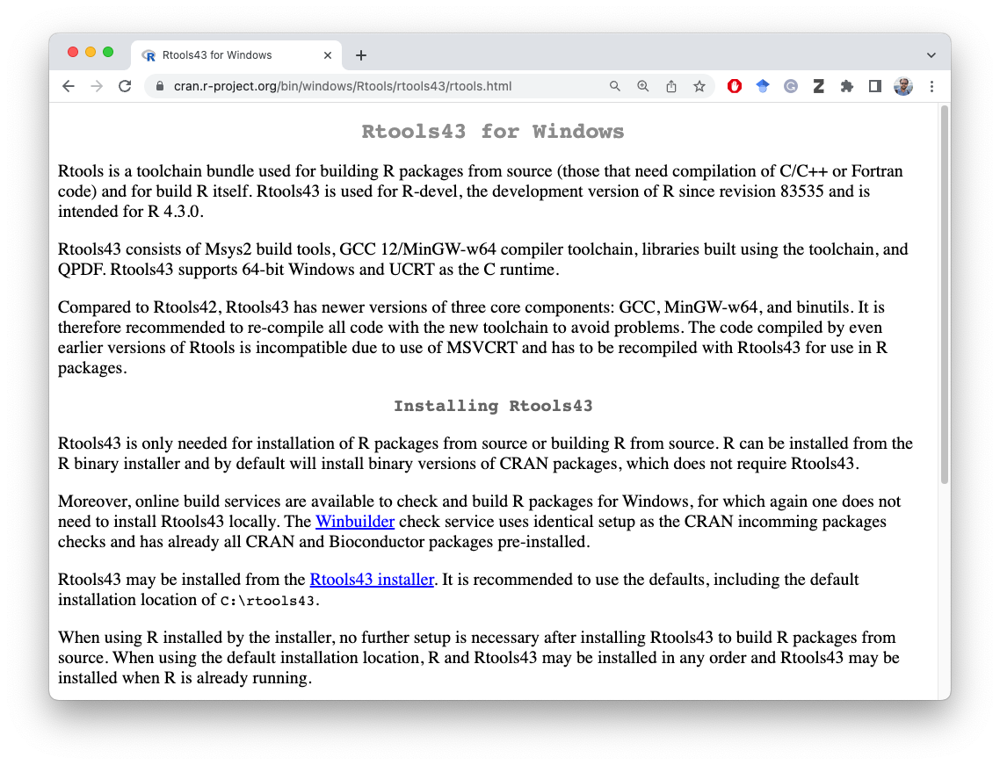
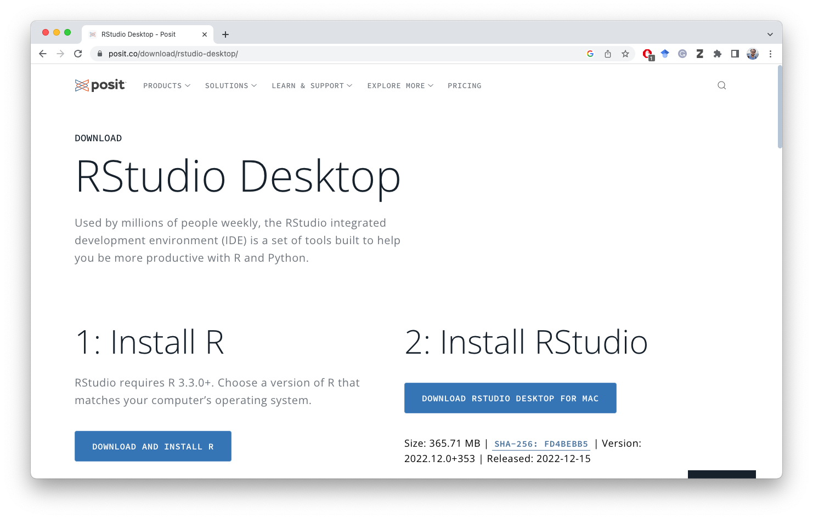

1 Introduction
2 Getting Started
We need two pieces of software to get started with R for research.
First, the R statistical software, which is the engine that we will not see from outside. All computations and instructions that we pass will be through this engine
Second, the graphical user interface (GUI), RStudio. This is where we will write code, organize files and get our output generated. Rstudio interacts with the R in the back-end and we only use this as an interface that communicates back and forth with R.
R itself has a graphical interface. However, RStudio has some nice features added to it that provides an improved R experience. RStudio is an integrated development environment (IDE). Although RStudio has a graphical interface, for much of the actions, you will need to write R codes. And that is a good thing. There are point and click menus for doing certain things such as configuring the R environment, and the RStudio itself. However, for most of our works, we will be writing codes using the built in editor in RStudio.
3 Installation
R can be installed both in Windows and Mac operating systems. Installation is straight forward like any other software you install in your operating system. In the following I am outlining the steps both for Windows and Mac OS.
R is freely available open source software that is free to use, modify, distribute under the GNU licence. This simply means you can use R for anything–hobby projects, funded projects, or commercial works. Absolutely free.
To download R, go to https://cloud.r-project.org/ and download the latest version for your operating system. R is available for Windows, Mac OSX, and of course, Linux systems.
RStudio is a free software under AGPL license. This is developed and maintained by RStudio which is a software company who develops and sells R-based software for enterprise use.
3.1 Setting up R in Mac
3.1.1 What you need
Download R for MacOS. Note that R is available for both Intel-based Mac and the newer Apple silicon-based Macs. Please read carefully on the download page for the correct version.
Download and install XQuartz from this page or directly from xquartz.org website. Download and install the version as recommended on the R for MacOSx download page.
Download Rstudio. The website will automatically recognize that you are using a Mac operating system and it will present you the option to download RStudio Desktop software for your system. Click the link on that page to download. Save it in a location that you can find later. This is how it looks like when this page was accessed on 2023-02-16

3.2 Setting up R in Windows
3.2.1 What you need
Download R for Windows. Most newer PCs are 64 bit. So download the version appropriate for your operating system.
Download and install RTools by visiting this page and following the instructions therein. The download link is available on this page. So please read and find the link and then download.
Download Rstudio. The website will automatically recognize that you are using a Windows operating system and it will present you the option to download RStudio Desktop software for your system. Click the link on that page to download. Save it in a location that you can find later. This is how it looks like when this page was accessed on 2023-02-16.
The step by step instructions are as follows.
3.2.2 Step 1: Download and Install R for Windows

Go to this page and Download R and install by executing it according to your operating system from https://cran.r-project.org/bin/windows/base/
3.2.3 Step 2: Download and Install RTools

Download RTools. Some packages in R need additional tools (to create the necessary development environment) to install packages.

Download the version appropriate for your R version. Usually the the latest version, for example at the time or writing this document, Rtools 4.3, would be needed. On this page you will find a link Rtools43 installer (the link will be something like: https://cran.r-project.org/bin/windows/Rtools/rtools43/files/rtools43-5493-5475.exe). It is highly recommend that you download this file from the Rtools download page and NOT using the direct executable link.
3.2.4 Step 3: Download and Install Rstudio

Download Rstudio. Once you are on this page, the website will automatically recognize that you are using a Windows operating system and it will present you the option to download RStudio Desktop software for your system. Click the link on that page to download. Save it in a location that you can find later.
The double click the executable file you just downloaded to install it. If you have difficulty installing a file or do not know how to do it, please search on Youtube for tutorials.
You are done!